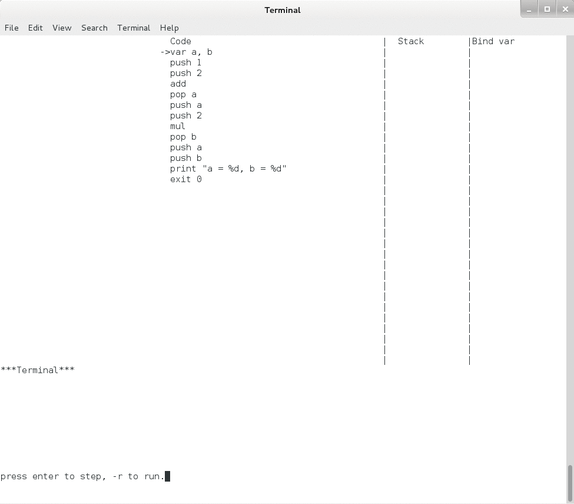
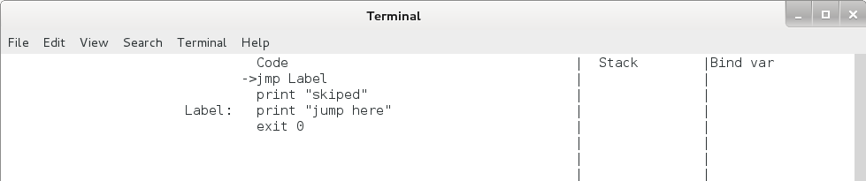
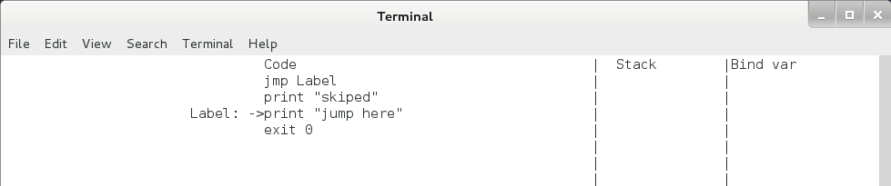
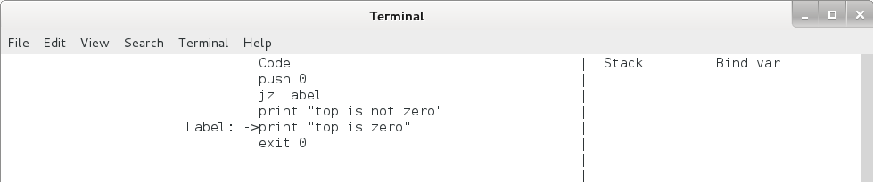
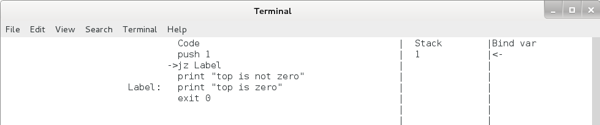
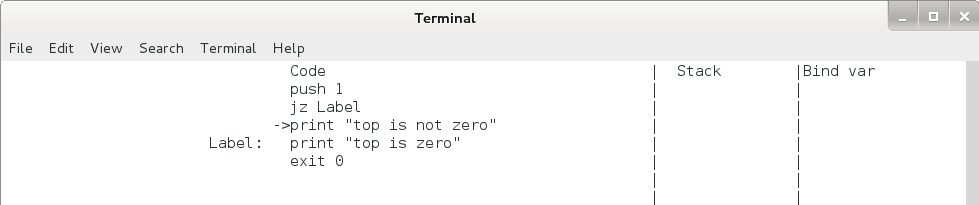
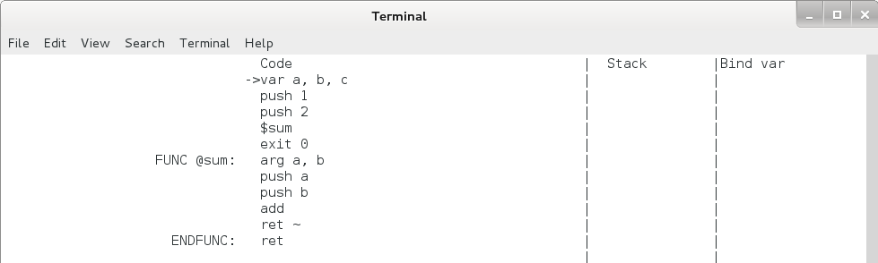
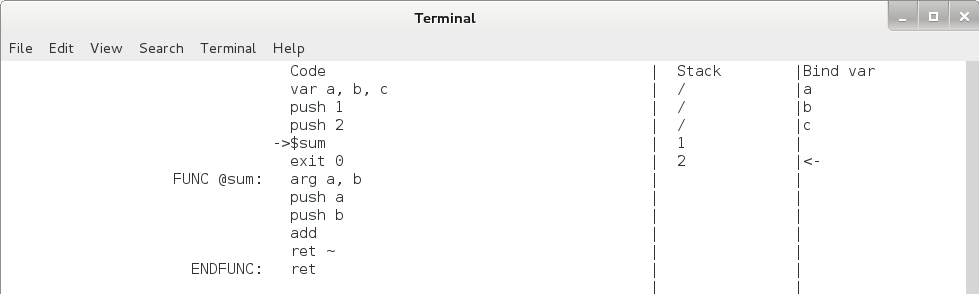
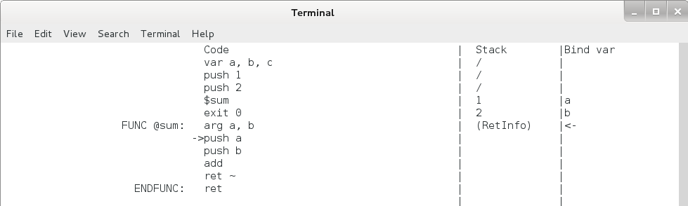
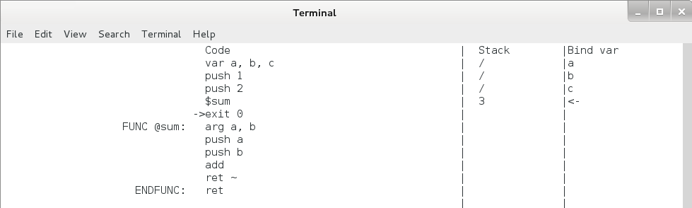

本章接上一章的内容，继续介绍 Pcode 。
上一章中，介绍了 Pcode 中的 5 组命令，同时介绍了各命令运行过程中 Pcode 虚拟机的内部状态是如何变化的，这些命令及其运行过程都很简单，相信学习过计算机系统架构和汇编语言的读者可以很快理解这些命令。本章将要介绍的剩下的两组命令稍微复杂一点，但也还是比较简单的。
在介绍这两组命令之前，先介绍一下如何使用 Pcode 模拟器来运行 Pcode ，这样读者可以用 Pcode 模拟器来运行自己编写的 Pcode 代码，同时观察各命令的运行过程中虚拟机的内部状态的变化，更有利于读者加深理解。在介绍最后两组命令时，也要借助此模拟器来更形象的描述这两组命令的运行过程。
Pcode 模拟器是本人用 python 编写的用来运行 Pcode 的程序，下载地址在这里：pysim.py。
下面先让我们来运行一个简单的例子：
; int a, b;
var a, b
; a = 1 + 2;
push 1
push 2
add
pop a
; b = a * 2
push a
push 2
mul
pop b
; print("a = %d, b = %d", a, b);
push a
push b
print "a = %d, b = %d"
将以上命令存为 pcode_1.asm 文件，同时将 pysim.py 下载下来，把两个文件放到终端的当前目录，在终端输入：
$ python pysim.py pcode_1.asm
输出：
a = 3, b = 6
下面再来单步执行以上 Pcode 代码，先将终端最大化（为达到好的显示效果，建议使用 gnome-terminal 或 Mate-terminal ），再输入：
$ python pysim.py pcode_1.asm -d
之后，终端上就出现了下图所示的内容：
图4.1 Pcode模拟器单步执行界面1
上图中，上半部分一共有 3 列，分别是 Code、 Stack 和 Bind var，分别表示代码、栈和绑定的变量。各列之间都用 “|” 隔开了。其中 Code 列下是我们编写的 Pcode 代码，注释已经全部都过滤掉了，在第一行的 “var a, b” 的最前面有一个 “->” ，这就是指令指针（eip），它永远指向下一个将要执行的指令。 Code 列中最后一行 “exit 0” 是模拟器自动增加的，这样程序运行到这里时会自动退出。
图中的下半部分有一行 ***”Terminal”***， 此行下面的区域用来表示 Pcode 虚拟机中的终端，print 和 readint 命令的输入和输出内容都将显示在此行以下。
最底下一行是 “press enter to step, -r to run.” ，表示若按回车，则模拟器会执行一步，按 “-r” 再回车，则模拟器会一直运行到程序结束。
现在，让我们敲一下回车，可以看到模拟器运行了一步，终端上的内容变成了下面的：
图4.2 Pcode 模拟器单步执行界面2
可以看到 “var a, b” 执行之后，指令指针（eip）指向了第二行，栈上的第一行和第二行的内容由空内容都变成了 “/”，而 “Bind var” 那一列上多了 “a” 和 “b” ，且 “b” 的后面有一个 “<-” ， 这是用来指示栈顶的。这些变化和上一章中对 var 命令的描述是完全一致的。
接下来，让我们一步一步的运行代码，细心观察每一步运行后代码区、栈区以及终端区的变化，可以看到随着命令的运行，指令指针一直在向下移动，栈顶指针则随 push / pop /print 等命令不断的上、下移动，终端区则在 print 命令运行后出现了 “a = 3, b = 6” ，程序在 “exit 0” 后退出，整个过程如下：
图4.3 Pcode 模拟器单步执行过程
好了，Pcode 模拟器的使用就介绍完了，建议读者利用上一章中介绍的 Pcode 命令编写一些简单的程序，再使用 Pcode 单步运行一遍，以加深对这些命令及虚拟机的记忆。
下面来介绍 Pcode 的最后两组命令。
jmp / jz 命令。jmp 命令为无条件跳转命令，直接跳转到标签处，用法如下：
jmp Label
...
...
Label:
print "jump here"
jz 命令为条件跳转命令，先取出栈顶元素，判断其是否为 0 ，若为 0 ，则跳转至标签处，若不为 0 ，则转到下一条命令，用法如下：
push 0
jz Label
print "top is not zero"
Label:
print "top is zero"
Pcode 虚拟机会将所有以 “ xxx: ” 开始的行记录在其标签表中，在 jmp / jz 命令运行时，虚拟机会根据命令后的标签名在标签表中查找对应的地址，如果查不到标签名，虚拟机会出错终止。
jmp 命令运行后 eip 的变化如下，运行后栈保持不变。
 图4.4 jmp命令
jz 命令运行后 eip 和栈的变化如下，注意无论是否发生跳转，栈顶的元素都将出栈。
图4.5 jz 命令执行过程（栈顶为 0 时）
 图4.6 jz 命令（栈顶不为 0 时）
FUNC / ENDFUNC / arg / ret / $func_name 命令。这组命令用来定义函数，这是 Pcode 的最后一组命令，也是最为复杂的一组命令，还是用个简单的例子来说明这组命令吧。
C 语言：
...
sum(1, 2);
...
void sum(int a, int b) {
return a + b;
}
对应的Pcode：
push 1
push 2
$sum
FUNC @sum:
arg a, b
push a
push b
add
ret ~
ENDFUNC
现在来对照着 C 语言中的函数定义和调用来说明这组命令。
FUNC 和 ENDFUNC 分别为函数开始和结尾，FUNC 后的函数名以 @ 开始，这是为了不与系统命令冲突，因为在 C 语言中有可能会定义一个名为 add 或 push 等和系统命令同名的函数。函数名后接一个冒号。
函数体内开始的第一个命令为 arg ，这是声明函数参数的，注意此命令不能和 FUNC 行写在同一行。如果函数没有参数，则此命令可以去掉。声明了函数参数，函数内部就可以根据参数名来引用函数调用者传递进来的参数了。
函数调用的时候，在函数名前加 “$” 就可以了，函数的参数通过栈传递，先 从左向右 将参数压入栈中（再次强调，是 从左向右 ，也是为了更接近于源文件的阅读顺序），再调用函数。
Pcode 虚拟机会将所有用 FUNC 和 ENDFUNC 定义的函数名、函数入口地址及函数参数等相关信息记录在其函数表（func_table）中，当遇到以 $ 开头的命令时，它根据 $ 后面的函数名在函数表中查找，若查找到，则会根据函数信息进行函数调用，若没查找到，则会出错终止。
函数用 ret 命令向调用者返回值，有以下形式：
ret ; 返回空值 “/”
ret 1 ; 返回常数
ret a ; 返回变量值
ret ~ ; 取出栈顶元素，返回其值。
函数返回时，会将调用者入栈的参数出栈，并在清栈后将返回值压入栈顶。
下面让我们来一步一步的执行这个程序，看看各命令执行过程中 eip 和栈的变化，看看调用者如何向函数传递参数，函数又如何向调用者返回结果。
在以上Pcode程序的第一行添加 “var a, b, c” ，并在 $sum 后面添加 “exit 0” ，之后存为 pcode_2.asm ，和 pysim.py 文件一起都放在终端的当前目录，并在终端输入：
$ python pysim.py pcode_2.asm -d
终端显示如下，注意模拟器自动在 ENDFUNC 的后面加了一句 ret ，这样对于函数体内不写任何 ret 的程序，程序运行到此处也会返回的。
图4.7 函数调用执行过程1
再敲3下回车，使程序运行到 $sum 这一行，可以看出此时栈上已经分配并绑定了 3 个变量 a, b, c ，函数的参数 1 和 2 也都压入到栈上了。见下图：
图4.8 函数调用执行过程2
下面就要开始调用函数了，让我们再敲 1 下回车，看看发生了什么：
图4.9 函数调用执行过程3
可以看到，code 区中，eip 已经跳到 sum 函数内的第1条命令 push a 那里了；而栈区中，栈顶向下增长了一个单元，栈顶单元里多了一个 (RetInfo) ，调用者压入的两个参数 1 和 2 被绑定了变量 a 和 b，而原来绑定的三个变量 a, b, c 消失了。
(RetInfo) 里面有什么？原来绑定的变量呢，到哪去了？
我们先把这两个问题放一放，先一步一步运行函数内的命令，到 ret ~ 这一行停下来，见下图：
图4.10 函数调用执行过程4
可以看出，此时 a + b 的结果已经计算出来并放到栈顶了，让我们再敲一下回车，执行一下 ret ~ 这条命令，看看发生了什么：
图4.11 函数调用单步执行过程5
可以看到，eip 跳回到了 $sum 后面的 exit 0 这一行，栈顶指针向上退回了 3 个单元，新的栈顶元素变成了 3 。我们把图4.11和图4.8对比一下可以看出，eip 移动到了下一条命令，压入的两个参数 1 和 2 出栈了，而 sum(1 , 2) 则被压入了栈顶，这个 $sum 命令和 add 命令的效果是完全一样的。
下面再详细的说明函数调用的整个过程中发生了什么事情，并解释前面的两个问题：(RetInfo) 里面有什么？原来绑定的变量到哪去了？
（1） 在函数调用之前，函数调用者按 从左向右 的顺序把函数的参数压入栈内。
（2） 在函数调用时，也就是 $sum 这条命令执行时， Pcode 虚拟机把：
- 函数的返回地址，也就是 $sum 下面那条命令的地址
- 虚拟机中当前的变量表（var_table）
- 函数的参数数量
这三个东西打包进 (RetInfo) ，并将其压入栈顶。注意这只是虚拟机，栈单元中可以放你想放的任何东西。
之后，虚拟机新建一个空的变量表，再根据 arg 后面的参数名称，把这些参数名称按顺序绑定到调用者压入栈内的几个单元上，并在新的变量表中记录下这些参数名及绑定的地址，再将此变量表设为当前变量表。这就是为什么图 4.6 中，原来的 a, b, c 不见了，而新的 a, b 则绑定到 (RetInfo) 上面的两个单元上。
最后，虚拟机跳转到函数内的第一条命令，开始执行函数过程。
（3） 当函数调用完毕后，也就是 ret 命令执行的时，虚拟机首先根据 ret 命令的型式计算出函数的返回值。
之后虚拟机从不停地将栈顶指针向上退回，直到遇到一个 (RetInfo) ，这时虚拟机将其出栈并解包，得到函数的返回地址、虚拟机的上一个变量表（也是函数调用者的变量表）、以及函数参数的数量。
然后虚拟机根据参数数量清栈（把调用者入栈的参数出栈），并将返回值放入栈顶。
再删掉当前变量表，将上一个变量表恢复为当前变量表，所以图 4.11 中，参数 a, b 都不见了，而原来的 a, b, c 又回来了。
最后，虚拟机跳转到函数的返回地址，开始执行 $sum 后面的命令，整个函数调用过程完毕。
好了，中间代码 Pcode 、 Pcode 虚拟机和 Pcode 模拟器就讲完了， Pcode 一共才7组命令，都很容易学习，学过计算机系统架构和汇编语言的读者应该很快就能掌握好。熟悉 python 的读者可以先结合这两章对 Pcode 命令和 Pcode 虚拟机的描述阅读一下 Pcode 模拟器的源码，了解一下 Pcode 虚拟机的具体实现。
Pcode 提供了一些如 push / pop / add / jmp 等操作非常简单的命令，足够接近真实的计算机指令操作，有些命令几乎和 x86 指令一模一样，这使得它易于被翻译成真正的计算机指令，我们将在第 15 章介绍如何将 Pcode 翻译成 x86 汇编。
另一方面，Pcode 也提供了如 var / FUNC / ENDFUNC 这样和高级语言接近的命令，它采用了逆波兰表达式这样的逻辑顺序，易于理解和实现，这些都降低了将高级语言编译成 Pcode 的难度，我们将在下一章介绍如何手工将 TinyC 源程序翻译成 Pcode ，然后在下下一章开始介绍编译器的普遍原理，介绍如何分析 TinyC 源程序的语法结构，以及如何自动生成 Pcode 等。
总而言之，用 Pcode 作为我们的 TinyC 编译组件的中间代码是非常合适的。
Pcode 的函数调用过程参考了 x86(32bits) 架构下的 C 语言 stdcall 类型的函数调用约定，整个流程基本一致。 stdcall 的不同之处主要在于：
（1） 参数是按 从右向左 的顺序入栈的；
（2） 函数的返回值保存在寄存器 eax 中，而不是栈顶。
这样做的效率比 Pcode 所采用的方式稍微好一些， Pcode 所采用的方式是和为了和逆波兰表达式的逻辑顺序匹配的，使 Pcode 更加简短、可读性更强、手工翻译的难度和编译器的实现难度都更低，总而言之， Pcode 采用方式好看、简单，易于实现，但实用性稍差，仅用于学习和研究。
网友 clover_toeic 的博客中非常深入的介绍了 C 语言函数调用过程，有兴趣的读者可以读一读，网址为：
http://www.cnblogs.com/clover-toeic/p/3755401.html
第4章完
{kind=link}
{kind=link}
{kind=link}
{kind=link}
{kind=link}
{kind=link}
{kind=link}
{kind=link}
{kind=link}
{kind=link}
{kind=link}
{kind=link}
{kind=link}
{kind=link}